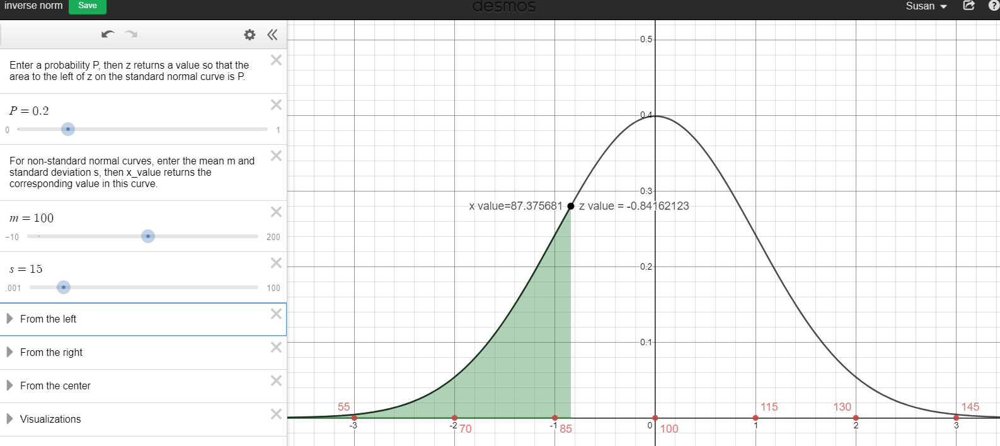
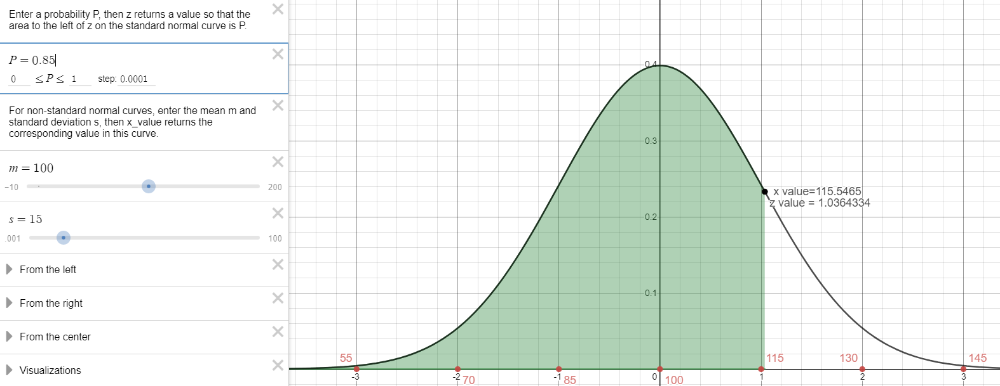
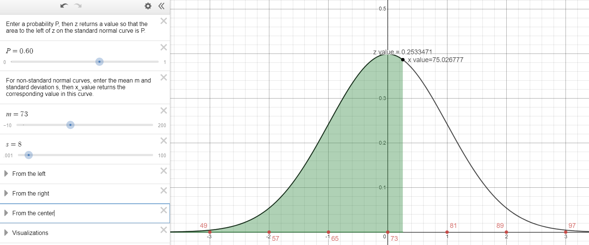
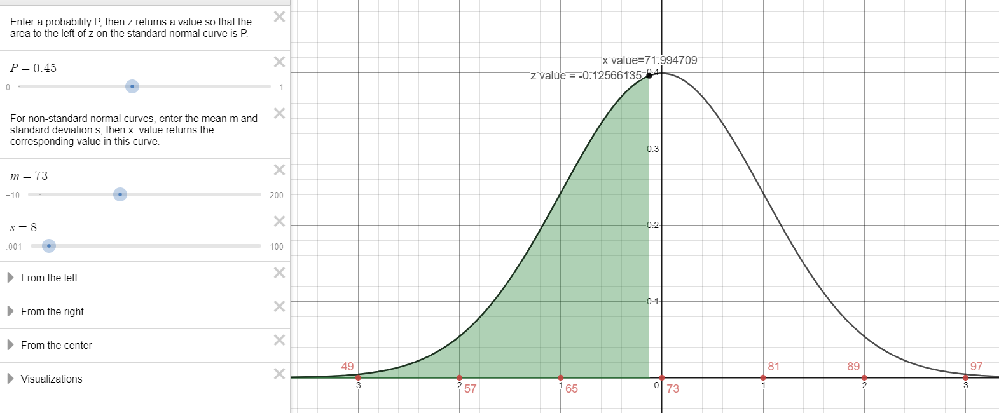

Unit 3 Normal Distributions and Confidence Intervals
5.3 Normal Distributions: Finding Values
Finding a z-Score given a Percentile
- IQ scores are normally distributed with a mean of 100 and a standard deviation of 15.
- What IQ score separates the bottom 20% from the top 80%?
20% cumulative area to the left
\(z=-0.84162\)
\(P_{20}=87.38\)

- What IQ score separates the top 15% from the bottom 85%?
85% cumulative area to the left.
\(z=1.036433\)
\(P_{85}=115.55\)

- What IQ score separates the bottom 20% from the top 80%?
- Weights of a breed of dog are normally distributed with a mean of 73 lbs and a standard deviation of 8 lbs.
- What weight separates the smallest 60% of the dogs from the heavier 40%?
60% cumulative area to the left.
\(z=0.253347\)
\(P_{60}=75.03 \mathrm{lbs}\)

- What weight separates the heavier 55% from the lightest 45%?
45% cumulative area to the left.
\(z=-0.125661\)
\(P_{45}=71.991 \mathrm{bs}\)

- What weight separates the smallest 60% of the dogs from the heavier 40%?
- The distribution of IQ scores is normally distributed with a mean of 100 and a standard deviation of 15. If the probability of randomly selecting someone with a score less than d is equal to 0.6026, what is d?
For point d, the cumulative area from the left is equal to 0.6026.
\(z_{d}=.2601\)
\(d=100+(0.2601)(15)=103.9\)
The probability of randomly selecting someone with an IQ score less than 103.9 (104) is approximately 0.6026 or 60.26%
- The distribution of IQ scores is normally distributed with a mean of 100 and a standard deviation of 15. If the probability of getting a score less than d is equal to 0.0793, what is d?
For point d, the cumulative area from the left is equal to 0.0793.
\(z_{d}=-1.4098\)
\(d=100+(-1.4098)(15)=78.85\)
The probability of randomly selecting someone with an IQ score less than 78.85 (79) is approximately 0.0793 or 7.93%
- IQ scores are normally distributed with a mean of 100 and a standard deviation of 15. If the probability of getting a score greater than d is equal to 0.9345, what is d?
Area to the right is 0.9345
Area to the left is \(1-0.9345=0.0655\)
\(z_{d}=-1.5102\)
\(d=100+(-1.5102)(15)=77.3\)
The probability of randomly selecting someone with an IQ score greater than 77.3 (round to 77 or 78) is approximately 0.9345 or 93.45%
- Pulse Rates of adults are normally distributed with a mean of 73 bpm and a standard deviation of 8 bpm. According to one company’s health screening criteria, 8%of adults would be rejected because they have readings that are too high and 2% would be rejected because they have readings that are too low. Find the two readings that are the cutoff values separating the rejected applicants from the others.
\(z_{d_{MIN}}=-2.0537\)
\(d_{M I N}=73+(-2.0537)(8)=56.6 \mathrm{bpm}\)
\(z_{d_{M A X}}=1.4051\)
\(d_{M A X}=73+(1.4051)(8)=84.2 \mathrm{bpm}\)
The applicants with pulse rates between 56.6 bpm and 84.2 bpm will not be rejected on the basis of pulse rate.